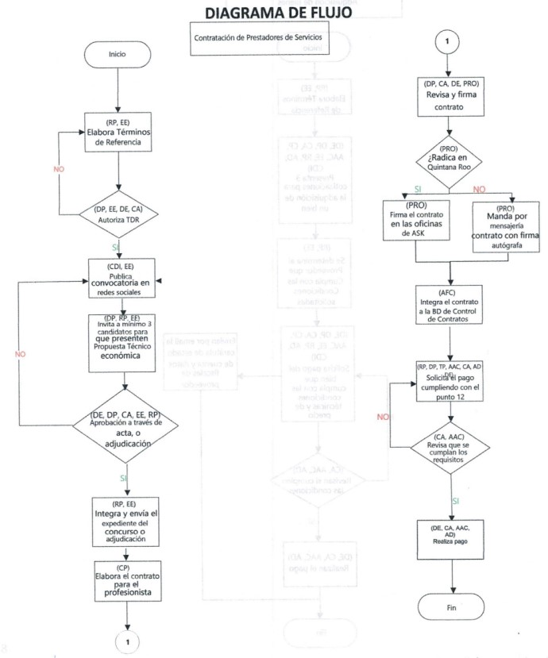
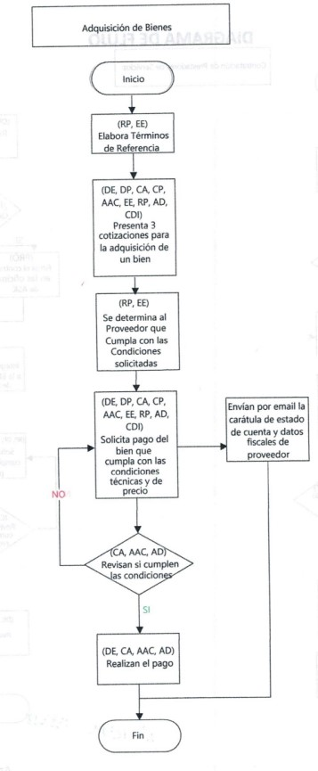

Políticas Operativas
Elaboración de TDR y EPAB (Especificaciones para adquisición de bienes)
El coordinador de proyectos o enlace externo elabora los términos de referencia (TDR) para contratación de profesionistas o las Especificaciones para adquisición de bienes (EPAB) que rebasen los $50,000, basándose en los objetivos y resultados esperados para cada proyecto, en concordancia con el presupuesto aprobado.
a. Currículum Vitae o portafolio profesional (Solo para TDR).
b. Propuesta técnico-económica o cotización, la cual debe incluir los gastos de viaje, viáticos y hospedaje dentro del presupuesto total.
Políticas de Aprobación Críticas
• Montos mayores a $90,000.00 y/o contrataciones mayores a $200,000.00: Se enviarán EPAB o TDR al director ejecutivo para su revisión y firma de aprobación en un plazo no mayor a 5 días hábiles y debe incluir el nombre de quién elaboró. Los TDR y EPAB de proyectos administrados para otras entidades deberán ser aprobados por el enlace externo y/o coordinador de proyectos.
• Convocatorias: El coordinador de desarrollo institucional o el enlace externo publica una convocatoria abierta en redes sociales durante un mínimo de 3 días hábiles, anexando los TDR y el formato para la presentación de propuestas técnico-económicas.
Políticas de Compra y Salvaguarda
Para asegurar transparencia y la obtención de las mejores condiciones del mercado, el número de ofertas requeridas está regulado de forma estricta:
- Compras menores a $10,000.00 M.N.: Será suficiente una sola cotización formal.
- Compras mayores a $10,000.00 M.N.: Requisito indispensable solicitar tres cotizaciones para la adquisición de un bien mueble, con base a los requerimientos del proyecto, las cuales deben ser comparables entre sí.
- Comité Evaluador: Se integra un comité evaluador de 3 personas que en un plazo de 3 días hábiles revisa y evalúa las propuestas para seleccionar a través de un acta de evaluación de candidatos, misma que será firmada por al menos uno de los evaluadores.
- La adjudicación directa: Debe estar debidamente justificada en un acta de adjudicación. El acta de adjudicación directa deberá ser revisada y firmada por la directora de programas y, en caso de contratos superiores a $200,000 por el director ejecutivo.
En el caso de cualquier bien mueble con un costo superior a los $100,000.00 M.N. deberá estar debidamente asegurado bajo la responsabilidad de la coordinación de administración.
Documentación Requerida del Candidato
Es responsabilidad del coordinador de proyectos solicitar e integrar al expediente del concurso o adjudicación la documentación legal y fiscal vigente para formalizar la relación institucional.
Lista de Documentos Obligatorios
- Identificación Oficial: Identificación oficial vigente del candidato a profesionista o del representante legal.
- Cuenta Bancaria: Carátula de estado de la cuenta bancaria a la que se realizarán los pagos correspondientes.
- Personas Morales: Acta constitutiva y poder del representante legal en caso de persona moral.
Tanto la Constancia de Situación Fiscal como la Opinión de Cumplimiento Fiscal adjuntas deben tener una antigüedad obligatoriamente menor a tres meses desde su fecha de emisión.
Envío de Expediente y Flujo de Firmas
El coordinador de proyectos o enlace externo integra y envía por correo electrónico al enlace jurídico y al analista financiero - contable un expediente del concurso o adjudicación.
Pasos Clave para la Formalización
- Expediente Completo: Contendrá el TDR con las autorizaciones, propuestas técnico-económicas con la documentación y el acta de evaluación o adjudicación con la firma del coordinador de proyectos o enlace externo. El analista financiero - contable archiva y resguarda dicho expediente.
- Elaboración de Contrato: El enlace jurídico y el analista financiero - contable elaboran el contrato correspondiente en un plazo de 3 días hábiles.
- Revisión Interna: La directora de programas, el coordinador de administración y el coordinador de proyectos revisan el contrato en un plazo de 2 días hábiles.
- Registro: El analista financiero - contable integra el contrato a la Base de Datos de Control de Contratos.
Se firma el contrato en el siguiente orden estricto: a) directora de programas; b) coordinador de administración; c) director ejecutivo; d) profesionista.
Los contratos menores a $200,000 podrán ir firmados por el director ejecutivo, directora de programas o coordinador de administración, y el profesionista en un plazo de 5 días hábiles. Todo contrato mayor a $200,000.00 pesos deberá ser firmado por el director ejecutivo y el profesionista.
Si el profesionista radica en Quintana Roo, se requiere la firma autógrafa y presencial en las oficinas de la asociación en Cancún o Felipe Carrillo Puerto. Para profesionistas foráneos se requiere la firma autógrafa enviada por medio del servicio de mensajerías.
E. ⚠️ Protocolo ante Opinión de Cumplimiento Negativa
En caso de que la opinión de cumplimiento fiscal del candidato sea en sentido negativo, la contratación podrá continuar siempre y cuando se cumplan estas condiciones de seguridad:
No se encuentren dentro de los supuestos que señala el artículo 69 y 69b del Código Fiscal de la Federación vigentes relacionados con empresas que realizan operaciones simuladas o facturas apócrifas.
Que no tengan un atraso en la presentación de sus declaraciones fiscales por más de 6 meses.
Trámite de Solicitudes y Requisitos de Pago
La liberación de fondos para prestadores o adquisición de bienes está estrictamente regulada por la entrega de comprobantes fiscales y validaciones técnicas.
Documentación Obligatoria para Pagos (SURF)
• Primer Pago: Condicionado a la entrega de un producto o servicio a través de una SURF que debe incluir el contrato firmado, la factura electrónica deducible en formato PDF y XML, y la carta de satisfacción técnica (Anexo 6) firmada por el coordinador de proyectos y la directora de programas.
• Pagos Subsecuentes: Programados en el contrato, solo se deberá incluir en la SURF la factura electrónica deducible en formato PDF y XML, y la carta de satisfacción técnica debidamente firmada por el coordinador de proyectos y la directora de programas.
• Bienes o Servicios Generales: Se solicita el pago para el que mejor cumpla con las condiciones técnicas, de calidad y de precio, justificándolo adecuadamente a través de una SURF y, en su caso, con el visto bueno de la directora de programas o la coordinación de administración.
🔑 Acceso a Plataforma y Altas de Proveedor
Portal Oficial SURF: Para ingresar a la plataforma SURF se utiliza el enlace http://189.206.164.249:9083/Siankaan-0.1/security/login, previa asignación de una contraseña por parte del coordinador de administración y/o analista financiero - contable.
Protocolo de Alta Simultánea: Al mismo tiempo que se requisita la SURF, se envía un correo electrónico al analista administrativo contable, para darlos de alta en el sistema de SURF, y al analista financiero - contable, para dar de alta en el portal bancario, con la carátula del estado de cuenta bancaria y los datos fiscales del profesionista.
No se realizará ningún pago que carezca de la documentación indicada.
Se realiza el pago los jueves y/o viernes de cada semana, siempre que la SURF cumpla con las políticas, se haya hecho a más tardar el martes inmediato anterior a las 11:59 PM, y el analista administrativo contable verifique que el importe esté de acuerdo con el contrato.
Para realizar pagos con la tarjeta de crédito institucional deberán enviar a la asistente de la dirección y al director ejecutivo el formato de pago con tarjeta de crédito (Anexo 8) y una guía de pasos para la aplicación del pago en el portal del proveedor.
Uso de Tarjetas y Comprobación de Viáticos
Para garantizar el orden contable y fiscal, el uso de las herramientas corporativas de pago y los fondos de transporte responden a pautas institucionales fijas.
✈️ Reglas para Viajes y Comprobación de Gastos
- Ajuste al Tabulador: Los gastos de viaje y transporte deberán ajustarse a lo estipulado en el tabulador de viajes, viáticos y gastos no permisibles anexo. Dichos pagos serán solicitados vía SURF a más tardar a las 11:59 PM del martes de cada semana.
- Plazo de Comprobación: La comprobación de gastos deberá hacerse en un plazo máximo de 7 días naturales después de haber concluido la actividad. No se aprobarán recursos adicionales hasta en tanto no se haya comprobado el recurso anterior.
- Boletos de Avión: Para el caso de los boletos de avión es necesario que adjunte el pase de abordar, adicional a la factura.
- Devolución de Efectivo: En caso de tener efectivo sobrante de los viáticos, es indispensable que dicho efectivo sea reintegrado en el penúltimo día del cierre del mes, en que se recibió como anticipo para gastos.
⛽ Control de Combustible y Fondo Revolvente
La compra de combustible se realizará a través de las tarjetas electrónicas que para ello entregará la coordinación de administración. Se realizará una dispersión de recursos de manera inicial a cada poseedor a manera de fondo revolvente.
Responsabilidad del Usuario: Es responsabilidad de cada poseedor de una tarjeta electrónica el solicitar la reposición de su fondo revolvente mediante una SURF adjuntando el recibo de compra de combustible por la actividad correspondiente de cada proyecto.
⚠️ Restricción de Dispersión:
No se dispersará a las tarjetas electrónicas el monto del combustible adquirido que carezca del recibo de compra correspondiente o que no se haya realizado por medios electrónicos, en cuyo caso deberá subirse una SURF con la factura deducible correspondiente en formato PDF y XML.
Todo pago mayor a $2,000 se realizará única y exclusivamente a una cuenta bancaria a nombre del emisor de la factura correspondiente. No se harán pagos o reembolsos que no cumplan con esta condición. No se podrán fraccionar las facturas mayores a $2,000.
Los pagos con la tarjeta de crédito institucional deberán hacerlo el director ejecutivo o la asistente de la dirección, previa autorización por escrito del director ejecutivo, con base en las respectivas SURF y el formato de pago.
No se podrán realizar pagos con otras tarjetas de crédito personales, a menos que, de manera excepcional y por causas plenamente justificadas, se cuente con autorización previa, por escrito del director ejecutivo o en su ausencia, de la directora de programas y la coordinación de administración.
Diagramas de Flujo de Procesos
Mapas de navegación interna para la contratación de profesionistas y adquisición física de bienes.
Flujo de Contratación de Prestadores de Servicios (PRO)

Flujo de Adquisición de Bienes

Tabulador Oficial de Viajes y Viáticos
Límites máximos reembolsables autorizados para comisiones oficiales de proyectos.
| Concepto de Gasto | Límite Diario Permitido | Criterios de Comprobación y Restricciones |
|---|---|---|
| Alimentos (Nacional) | $750.00 M.N. | Tope sugerido distribuido en $250.00 por cada comida individual. |
| Alimentos (Internacional) | $1,500.00 M.N. | Sujeto a validación de comprobante fiscal extranjero equivalente. |
| Hospedaje (Hotel) | $2,000.00 M.N. por noche | Factura obligatoria desglosada a nombre de la asociación. |
| Transportación (Taxis Terrestres) | Aeropuerto-Hotel: $750.00 Hotel-Aeropuerto: $500.00 |
Se prioriza el uso de servicios ejecutivos de plataforma regulada. |
| Combustibles y Gasolina | Según asignación por ruta en litros | Prohibido pago en efectivo. Debe solventarse con tarjeta digital. Rendimiento base estimado: 7 kilómetros por litro. |
⛽ Desglose de Asignación de Combustible (Viaje Redondo en Litros)
Rutas desde Cancún
| Destino (Viaje Redondo) | Litros |
|---|---|
| Playa del Carmen | 22 L |
| Tulum | 39 L |
| Felipe Carrillo Puerto | 67 L |
| Chetumal | 111 L |
| Mérida | 89 L |
| Campeche | 137 L |
Rutas desde Felipe Carrillo Puerto
| Destino (Viaje Redondo) | Litros |
|---|---|
| Playa del Carmen | 47 L |
| Tulum | 29 L |
| Cancún | 67 L |
| Chetumal | 45 L |
| Mérida | 78 L |
| Campeche | 108 L |
Compra de bebidas con contenido alcohólico, pago de propinas de cualquier tipo, multas de tránsito ordinarias, recargos por extemporaneidad o gastos recreativos de entretenimiento personal.
Datos Fiscales Institucionales
Use esta información exacta al requerir facturas de proveedores del proyecto:
AMIGOS DE SIAN KAAN
ASK8606053X2
Gastos en General
603 - Personas Morales con Fines no Lucrativos
Formatos y Anexos de Control Interno
Haga clic en cada elemento para descargar de forma directa las plantillas de Microsoft Office y documentación requerida.